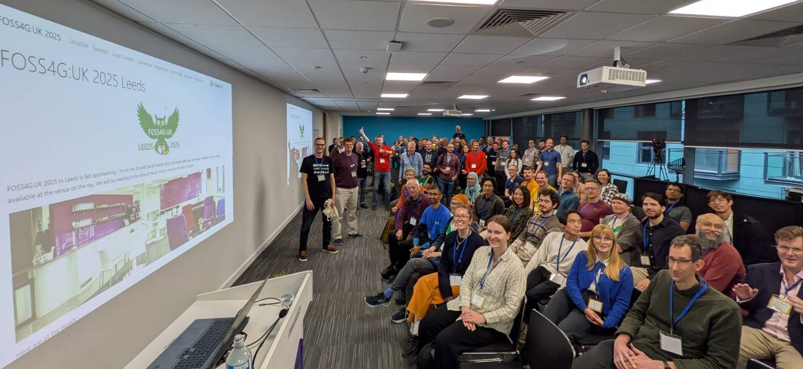

FOSS4G:UK 2025 Leeds - It’s all about the people
I’ve just returned from a fantastic 2 days in Leeds for FOSS4G:UK 2025. FOSS4G is an amazing group, and I am so proud to be part of the fantastic team that ran FOPSS4G:UK 2025 Leeds on 1st and 2nd October 2025. We were in the great venue Horizon Leeds, with two days of workshops and talks.

I always love the fact that for many of these conferences you can have the choice of going to talks or going to workshops for the whole two days. People have so many things they want to share, we can provide so much content! One workshop was enough for me, and I learnt a great deal about QGIS Model Builder from Ant Scott - a great way of automating procedures if you don’t want to learn how to code. Of course, if you do want to learn to code, I would recommend R!
There is also the range of content - some highly technical talks, for example the one on Mesh datasets, which I didn’t catch myself, but I heard was brain melting! All Datasets are Meshes: Towards a new Ontology for 3D GIS - to some fascinating insights on running a commercial business using open source software from both Alex Wrottesley at Idox Geospatial and Mike Saunt from Astun and some great hints and tips including Tom Armitage on QGIS Blend Modes.
We had three fantastic keynotes: first up was Kathryn Berger, Lead Data Scientist from UK Department for Science, Innovation and Technology (DSIT). She talked about how she first came across GIS through an initiative providing free Landsat images for schools in New Hampshire, USA in the 1990s (at this point, access to Landsat images was chargable). These formed part of a project getting school children (including her) out into nature to measure trees, calculate biomass and correlate this with the Landsat images. It lit her excitement for GIS and she has been working with GIS ever since.
She also provided a great example of some of the limitations of AI. One fascinating application of AI is to digitise building footprints - a very tedious job to do by hand, which would be great if we could automate it and speed it up. In some areas this works very well, but in other areas it does not.
How can machine learning bias affect GIS applications? Geoversity
Auditing Geospatial Datasets for Biases: Using Global Building Datasets for Disaster Risk Management
In the image above, on the left the buildings highlighted with a white outline have been digitised by the local population. On the right, the same buildings have been digitised by AI. You can spot the missing buildings in the middle easily - these types of building were clearly not considered to be buildings by this AI. However, if we then use this data to calculate how many vaccinations an area might need, how much aid might be needed, how much support might be needed after a natural disaster, then if we use the AI (yellow) version, quite a lot of people are going short!
If you are interested how many buildings might be missing, Claude.ai says: “There appear to be approximately 60-70 buildings highlighted in white. There appear to be approximately 80-100 buildings highlighted in yellow.” So a potential difference of ~30%-40%. Source
She also mentioned the HOT (Humantarian OpenStreetMap Team) approach to AI which is a great one to use:
The problem:
- Most current AI models are closed, unclear how and on what data the model was trained (most often with built in biases)
Their solution:
- Tackle biases by localising models, (don’t use a general model that works everywhere)
- Use fully open-source AI models for transparency (so it’s clear how AI systems are trained and who is training them)
- Use local knowledge, human-in-the-loop, to validate and provide feedback
Our second keynote was Mariam Crichton who is a big fan of thinking about how our work connects to the world as a whole. She said ‘all data is global data’ and was keen for us to know, that even if we are working in a very country or local focused way, are work is part of something much bigger - and can have some much bigger impacts.
She also highlighted some really interesting priorities for open data from her experience in the sustainability market, and other highly regulated fields - they are not what you might expect:
Finally, Alasdair Rae talked about getting to the point and what drives us as geospatial professionals. Open source has many many strengths - including collaboration. He had a whole slide on this (which now I can’t find a picture of!) and he also had this gem:
I volunteered to be on the Local Organising Committee (LOC) and the conference would not have happened without the rest of the committee - thank you so much to Dennis, Ant, Json, Claire and Weiming. I’d also like to say a special thank you to Matt, who did a lot of work as Treasurer behind the scenes getting money from sponsors, but couldn’t be there for the event!
I would also not hesitate to recommend the venue, Horizon Leeds. It is a lovely space, and with 180 people we filled it nicely. There were also no queues for coffee or lunch, which I think is a first for me! Coffee (& tea) were available on demand from two stations any time, and lunch was a grab and go ‘bento box’ split over two stations, which meant no queues either. We also had a lovely selection of 4 different lunches.
Lastly, we also had a discussion on the potential of the UK to bid for (and hopefully host) the FOSS4G International conference, most likely in 2027 in Bristol. Watch this space for details, and if you want to help out, join the OSGeo:UK mailing list for details.
All three keynotes, and all the talks in Create 1 and Create 2 were videoed (including the AGM which was extra fun with no slides!) so they will be on out YouTube channel in a month or two - watch our social media for details.
If you have any questions, please contact me.